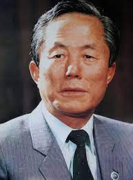

General Choi Hong Hi
El Embajador Choi fue el “fundador” del Taekwon-Do como es acreditado por la Enciclopedia Británica.
Como miembro fundador del Ejército surcoreano enseñó artes marciales a los soldados asignados a él desde 1946. Nombró al Taekwon-Do y lo promocionó sin cesar como el arte marcial de defensa personal coreano.
En 1957, fue vicepresidente de la Asociación Coreana de Taekwondo a Corto Plazo. En 1959, fundó la Asociación Coreana de Taekwondo (KTA) y fue su primer presidente. También en 1959, escribió su primer libro sobre Taekwon-Do y dirigió las fuerzas de Taekwon-Do en protestas en Vietnam y Taiwán, la primera vez en la historia que se disputó el Taekwon-Do. en otro país.
El General Choi idearía las 26 Formas o Tuls. Estas fueron las primeras formas coreanas jamás creadas.
En 1962 presentó personalmente el Taekwon-Do en Malasia cuando fue asignado allí como el primer embajador de Corea.
En 1965, dirigió una gira mundial patrocinada de buena fe por el gobierno coreano. Esta visita fue la base para la fundación en 1966 de la Federación Internacional de Taekwondo (ITF), el primer organismo rector del Taekwondo en el mundo. Esta es la primera vez que Corea alberga una organización internacional.
La ITF tendría millones de miembros en más de cien países y él presidiría durante su vida, 17 de sus campeonatos del mundo. El General Choi viajó incansablemente por todo el mundo para enseñar y promover el auténtico Taekwondo. Fue el autor de cinco libros sobre el tema, muchos de los cuales han pasado por muchas ediciones y se han reimpreso. Sus obras han sido traducidas al menos a 8 idiomas. También supervisó el desarrollo de varios tipos de registros electrónicos de lo que creó; Esto convierte al Taekwon-Do en el arte marcial más registrado de todos los tiempos.
El General Choi Hong Hi-nació en 1918 en Hwa Dae Ri, Ham Kyung Buk Do en el noreste de Corea, cerca de Cheongjin. Es importante señalar que cuando nació el General Choi, Corea era un país unificado. Sin embargo, Corea sufría la brutal ocupación del Imperio de Japón. Los coreanos a menudo se refieren a este período como la "Edad Oscura". Al nacer, Corea utilizaba el calendario lunar.
Según el calendario lunar, su cumpleaños es el 9 de noviembre de 1918. Pero según el calendario occidental, es el 22 de diciembre. Sin embargo, el General Choi prefirió celebrar su cumpleaños el 9 de noviembre según el calendario occidental, combinando así las dos culturas en las que vivirá.
El General Choi había estado expuesto a historias y a algunas técnicas básicas de Taek Kyon, para reforzar su salud y confianza cuando estudió caligrafía como un adolescente frágil. Irónicamente, su padre lo envió a estudiar caligrafía y los clásicos chinos ya que fue expulsado de su escuela japonesa local, controlado por participar en protestas cuando era joven.
Esto demostró desde el principio, su terquedad, fuerte idea de independencia, la afinidad por la justicia y el sentimiento anti-japonés, este último influenciado por los sentimientos de su padre y que ellos compartían. Años más tarde, a medida que crecía, se fue a Japón para continuar su formación académica. Mientras, él iría allí a ganarse el Cinturón Negro II Dan en una forma de Karate Shotokan.
Fuentes independientes confirman que, en efecto, él enseñó Karate en Japón en un YMCA antes de regresar a Corea.
Como la Segunda Guerra Mundial llegaba a su fin, los japoneses que ahora estaban perdiendo claramente, recurrieron a reclutar forzosamente hombres coreanos en el servicio militar. Una vez reclutado en servicio en contra de su propia voluntad, el joven Choi Hong-Hi se involucró en un complot para derrocar al gobierno colonial japonés imperial.
Eventualmente, los conspiradores planeaban unirse a lo que algunos llamaron El Ejército Antijaponés de los Estados del Noreste y los esfuerzos del guerrillero de Corea, Kim Il-Sung, quien llegó a ser un comandante del movimiento clandestino de resistencia e independencia. Choi estaba en la lista de los más buscados por los japoneses.
El éxito de este movimiento y la resistencia coreana se vio favorecido por la disponibilidad de moverse de uno y otro lado a través de las fronteras de China y la Unión Soviética que se encontraban en la región noreste de Corea. Los traidores, que eran colaboracionistas coreanos, informaron los planes y el General Choi y otros fueron encarcelados.
Mientras estuvo preso se entrenó en su Karate y a veces, incluso, instruyó a los guardias de la prisión, según lo verificado por otro recluso que estaba involucrado en el complot y que también estaba en confinamiento como compañero de cárcel.
Al terminar la Segunda Guerra Mundial, Choi Hong Hi fue perdonado y liberado de su cautiverio en Pyongyang. Se dirigió a Seúl y se convirtió en alguien fundamental en ayudar a establecer el gobierno surcoreano, abogando por el control democrático nacional y contra el comunismo.
Como este Oficial Subalterno fue escalando posiciones, continuó la difusión de aquél a través no sólo de sus esfuerzos personales de enseñanza sino que, además, reclutó a artistas marciales coreanos para convertirlos en instructores para enseñar al creciente número de soldados bajo su mando. Incluso cuando viajó a Estados Unidos para recibir entrenamiento militar en 1949, aprovechó la oportunidad para mostrar su arte marcial (muy probablemente fuese el primer coreano en hacerlo).
Un buen ejemplo de esta iniciativa para enseñar las artes marciales a sus soldados fue cuando ya con el grado de General, él fue el encargado de formar una nueva división en la isla de Jeju. El 29º de Infantería que se conocería como la “División Puño”. Fue aquí que él tuvo al teniente Nam Tae-Hi y al sargento Han Cha-Kyo, miembros de la Chung Do Kwan transferidos bajo su mando y asignados a enseñar las artes marciales a los soldados de esta nueva división de infantería.
El uso del puño que hizo el General Choi en la bandera División y emblema era simbólico del espíritu de lucha marcial que el joven general quería inculcar a sus tropas. Un monumento fue erigido en la isla de Jeju para conmemorar la histórica inauguración “División Puño”. Este monumento contiene la caligrafía del General Choi, la denominación y la enseñanza sobre el Espíritu Marcial. Como resultado de esta historia, la isla de Jeju ha llegado a ser conocido como el “Seno del Taekwon-Do”.
Cuando esta famosa División completó su formación, se trasladó a Corea continental. El General Choi organizó una demostración de artes marciales para el presidente surcoreano Dr. Seung-Man Rhee, La demostración fue en honor del cumpleaños del Presidente y a la vez, de la celebración del primer aniversario desde la formación de la División “Puño”.
Rhee había denominado a eso que mostraron como Taek Kyon, un juego marcial famosa coreano indígena que es previo a la ocupación japonesa. El Gral. Choi, no obstante, sabía que era más de manera correcta denominado Tang Soo Do. Este acontecimiento dio la motivación para descubrir un nuevo nombre para lo cual se transformaría en un arte marcial coreano de custodia personal.
Después, en el otoño y el invierno de dicho año (1954) el Gral. Choi, usando tanto sus avanzadas capacidades sobre la enseñanza y de la caligrafía que involucraban un extenso entendimiento de los personajes y el lenguaje chino, buscó y después originó el nuevo término de Tae Kwon Do. De esta forma Kwon se juntó con Tae para explicar las piezas físicas de su arte marcial. El Gral. Choi otorgó normas a sus instructores para que los militares gritaran TAE KWON al saludar, para contribuir a filmar la utilización del nuevo nombre.
Luego de que el Gral. Choi formó el nuevo nombre de Taekwon-Do, entonces hizo diversos intentos de unir los Kwans de Artes Marciales civiles, debido a que había obtenido la aceptación del Mandatario de Corea del Sur como lo muestra la caligrafía de Taekwon-Do que el doctor Entonces el Maestro Son Duk-Sung, maestro de la Chung Do Kwan, se desempeñó como Secretario Gral.
En 1950, El Gral. Choi además fue útil como honorario Kwan Jang Nim de la Chung Do Kwan, luego de que su Enorme Maestro fundador Lee Won-Kuk viajó a Japón para huír del violencia político. El Chung Do Kwan ha sido uno de los primeros Kwans de Artes Marciales en abrir puestos en Corea luego de la Segunda Guerra Mundial.
En 1959, dirigió la primera exhibición del equipo de Taekwon-Do en el extranjero una vez que en marzo, llevó el equipoa Vietnam y Taiwán. El 3 de septiembre de 1959 conformó la primera Sociedad Coreana de Taekwon-Do y se desempeñó como Mandatario inicial. Dos meses después, se convirtió en autor del primer libro sobre el Taekwon-Do, escrito en coreano Hangul y Hanja chino.
El Gral. Choi continuaría escribiendo diversos libros, incluyendo la obra de escrito de 1972 que se conoció como la “biblia de Taekwon-Do”, en 1983 los 15 Volúmenes de la Enciclopedia de Taekwon-Do, obra sin antecedentes, numerosas variantes condensadas de aquel trabajo, sus 3 volúmenes de sus memorias, así como una Guía de Cultura Moral. Ha recibido por lo menos 3 grados de doctorado “honoris causa”, varios premios y honores por su trabajo universal en Taekwon-Do incluyendo un Premio de Deportes gubernamental de Corea en 1968.
En 1964, mientras aún era embajador en Malasia, viajó a Vietnam para presentar sus nuevos Tuls a los instructores militares coreanos que se encontraban allí para su posterior difusión. También envió los manuscritos de regreso a Corea, donde se iniciaron también. Después de completar su misión diplomática regresó a Corea y en enero de 1965 fue elegido el tercer Presidente de la Asociación Coreana de TAE SOO DO0. En agosto de 1965, él tuvo éxito en lograr que se cambie el nombre a Tae Kwon Do, por un margen de 1 voto reportado.
En agosto de 1965, él tuvo éxito en lograr que se cambie el nombre a Tae Kwon Do, por un margen de 1 voto reportado.
Posteriormente, en el otoño de 1965, dirigió como Embajador en Tarea particular, un Recorrido de Taekwon-Do por el planeta, patrocinado por el Regimen de Corea. En dicha gira mundial él además repartió su libro en inglés sobre Taekwon-Do: El arte coreano de custodia personal. Este ha sido el primer libro sobre el Taekwon-Do escrito en lenguaje Inglés.
El Embajador Choi trasladó la sede de la ITF a Toronto, Canadá, una región metropolitana fundamental en América del Norte. Estratégicamente esto ayudaría a promover la internacionalización de Taekwon-Do como un arte marcial universal.
Canadá además podría ser la sede de los siguientes Juegos Olímpicos, en los cuales el Gral. Choi deseaba tener a su Taekwon-Do conformando parte.
En 1985 viajó otra vez la sede de la ITF a Viena, Austria. Este desplazamiento brillante ayudó Embajador Choi a continuar su sueño de dar a conocer su Taekwon-Do internacionalmente sin considerar la doctrina política, las fronteras nacionales, la raza, la religión o credo.
Hoy en día existen numerosas sedes nacionales, asociaciones nacionales y aliadas de la ITF en todo el planeta. Esta es la prueba viviente de que su sueño fue efectivamente hecho realidad.
Después de una vida dedicada al desarrollo del Taekwon-Do, un arte marcial moderno, basado en los valores tradicionales, la filosofía y entrenamiento, el General Choi, fundador del Taekwon-Do y Presidente de la Federación Internacional de Taekwon-Do, murió el 15 de junio 2002, en el país de su nacimiento.
General Choi Hong Hi, Fundador y Presidente de la Federación Internacional de Taekwon-Do murió el 15 de junio de 2002, en Pyongyang, República Democrática Popular de Corea.